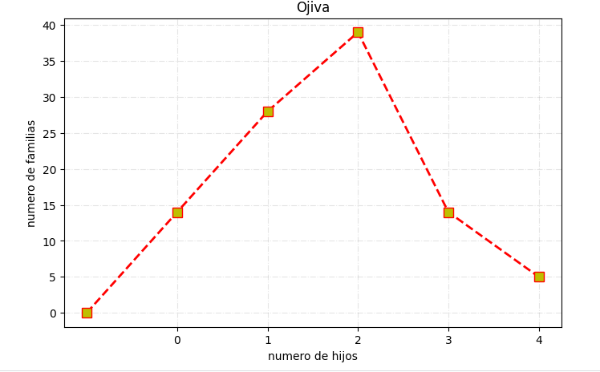
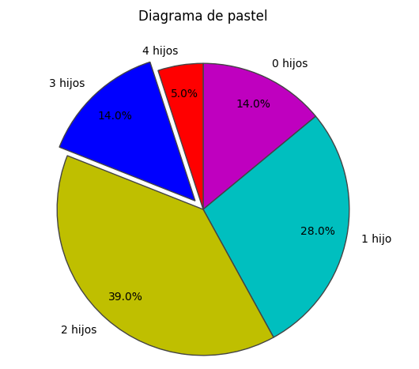
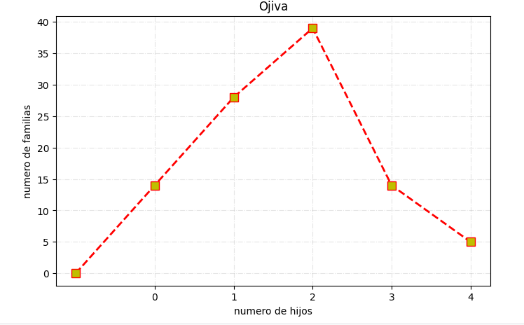
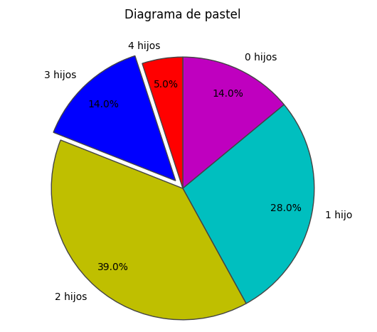

Estudio de Mercado y Población
Análisis estadístico de muestra aleatoria (n=100) en diferentes contextos.
Ejemplos de Variables Estadísticas
En estadística, los datos se clasifican según su naturaleza. A continuación, se presentan ejemplos de 100 datos para variables discretas, continuas y cualitativas.
1. Variable Cuantitativa Discreta
Definición: Son valores numéricos que resultan de un conteo. No admiten valores intermedios (decimales) entre dos números enteros.
Ejemplo: Número de hijos en 100 familias encuestadas.
2. Variable Cuantitativa Continua
Definición: Son valores numéricos que resultan de una medición. Pueden tomar cualquier valor dentro de un intervalo (admiten decimales).
Ejemplo: Distancia en kilometros (km) de 100 corredores.
3. Variable Cualitativa (Categórica)
Definición: Expresan características, cualidades o categorías que no pueden ser medidas con números. Pueden ser nominales u ordinales.
Ejemplo: Plataforma de streaming favorita de 100 usuarios.
Hijos por Familia
Variable Discreta (Enteros)Datos recolectados de un censo local preguntando el número de hijos en 100 hogares.
1.1 Matriz de Datos
| 2 | 1 | 0 | 3 | 2 | 1 | 4 | 2 | 0 | 1 |
| 1 | 2 | 3 | 0 | 2 | 2 | 1 | 2 | 3 | 2 |
| 0 | 1 | 2 | 4 | 2 | 1 | 0 | 3 | 2 | 1 |
| 3 | 2 | 1 | 2 | 0 | 2 | 1 | 2 | 2 | 3 |
| 1 | 0 | 2 | 1 | 3 | 2 | 0 | 2 | 1 | 2 |
| 2 | 1 | 0 | 2 | 3 | 1 | 4 | 2 | 1 | 2 |
| 1 | 2 | 3 | 2 | 0 | 1 | 2 | 3 | 2 | 1 |
| 0 | 1 | 4 | 2 | 1 | 3 | 2 | 0 | 2 | 1 |
| 2 | 3 | 1 | 2 | 2 | 1 | 2 | 3 | 4 | 2 |
| 1 | 2 | 0 | 1 | 2 | 3 | 1 | 2 | 0 | 1 |
1.2 Frecuencias
| N° Hijos | (fa) | (fr) | (facum) |
|---|---|---|---|
| 0 Hijos | 14 | 0.14% | 0.14 |
| 1 Hijo | 28 | 0.28% | 0.42 |
| 2 Hijos | 39 | 0.39% | 0.81 |
| 3 Hijos | 14 | 0.14% | 0.95 |
| 4 Hijos | 5 | 0.05% | 1.0 |
| TOTAL | 100 | 100% |
 



Rendimiento de Corredores
Variable Continua (Km)Distancia en kilómetros recorrida por 100 atletas en 30 minutos (datos con decimales).
2.1 Matriz de Mediciones
| 5.20 | 6.10 | 4.80 | 5.50 | 6.80 | 5.10 | 4.90 | 6.20 | 5.70 | 5.40 |
| 5.90 | 4.60 | 6.50 | 4.70 | 5.30 | 6.10 | 4.80 | 6.40 | 5.60 | 6.70 |
| 5.10 | 6.30 | 5.05 | 4.90 | 6.00 | 6.90 | 4.50 | 5.80 | 5.20 | 6.05 |
| 6.20 | 4.80 | 5.40 | 6.60 | 5.10 | 5.70 | 4.90 | 6.10 | 6.80 | 4.70 |
| 5.30 | 6.10 | 5.50 | 5.90 | 6.70 | 4.90 | 6.08 | 5.02 | 4.60 | 6.30 |
| 5.08 | 6.60 | 5.20 | 4.80 | 5.60 | 6.20 | 5.10 | 6.50 | 5.80 | 4.50 |
| 6.02 | 5.40 | 6.80 | 5.20 | 4.70 | 5.90 | 5.10 | 4.90 | 6.30 | 6.90 |
| 4.60 | 6.10 | 5.30 | 6.50 | 5.40 | 4.80 | 6.20 | 5.05 | 6.80 | 5.10 |
| 5.70 | 6.70 | 5.20 | 5.80 | 4.70 | 6.10 | 5.30 | 4.90 | 6.40 | 6.60 |
| 5.10 | 5.60 | 6.50 | 5.30 | 6.05 | 4.80 | 6.30 | 5.50 | 4.60 | 5.90 |
2.2 Intervalos de Distancia
| clase | limite inferior | limite superior | marca de clase | fa | fr | facum |
|---|---|---|---|---|---|---|
| 0 | 4.50 | 4.80 | 4.65 | 10 | 0.10 | 0.10 |
| 1 | 4.80 | 5.10 | 4.95 | 16 | 0.16 | 0.26 |
| 2 | 5.10 | 5.40 | 5.25 | 17 | 0.17 | 0.43 |
| 3 | 5.40 | 5.70 | 5.55 | 10 | 0.10 | 0.53 |
| 4 | 5.70 | 6.00 | 5.85 | 10 | 0.10 | 0.63 |
| 5 | 6.00 | 6.30 | 6.15 | 15 | 0.15 | 0.78 |
| 6 | 6.30 | 6.60 | 6.45 | 10 | 0.10 | 0.88 |
| 7 | 6.60 | 6.90 | 6.75 | 10 | 0.10 | 0.98 |
| TOTAL | --- | --- | --- | 100 | 1 |
Streaming Favorito
Variable Cualitativa (Categorías)Encuesta sobre la plataforma principal utilizada por 100 usuarios.
3.1 Respuestas (Log)
| Netflix | Disney+ | HBO | Netflix | Prime | Netflix | HBO | Disney+ | Netflix | Netflix |
| HBO | Netflix | Prime | Disney+ | Netflix | HBO | Netflix | Prime | HBO | Disney+ |
| Netflix | HBO | Netflix | Netflix | Disney+ | Prime | HBO | Netflix | Disney+ | Netflix |
| Prime | Netflix | HBO | Disney+ | Netflix | HBO | Netflix | Netflix | Prime | HBO |
| Disney+ | HBO | Netflix | Prime | Netflix | Disney+ | Netflix | HBO | Netflix | Disney+ |
| Netflix | Prime | HBO | Netflix | Disney+ | Netflix | HBO | Prime | Netflix | HBO |
| HBO | Netflix | Disney+ | Netflix | Prime | HBO | Netflix | Disney+ | Netflix | Prime |
| Disney+ | HBO | Netflix | Prime | Netflix | HBO | Disney+ | Netflix | HBO | Netflix |
| Netflix | Disney+ | Prime | HBO | Netflix | Disney+ | HBO | Netflix | Prime | Disney+ |
| HBO | Netflix | Disney+ | Netflix | HBO | Prime | Netflix | HBO | Disney+ | Netflix |
3.2 Participación de Mercado
| Plataforma | fa | fr | facum |
|---|---|---|---|
| Disney+ | 20 | 0.20 | 0.20 |
| HBO Max | 25 | 0.25 | 0.45 |
| Netflix | 40 | 0.40 | 0.85 |
| Amazon Prime | 15 | 0.15 | 1.00 |
| TOTAL | 100 | 1 |